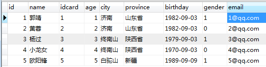
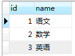
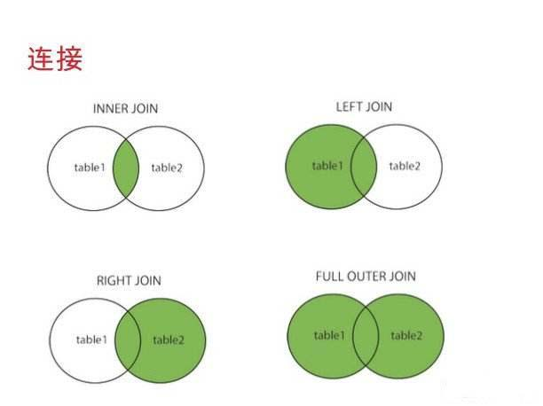
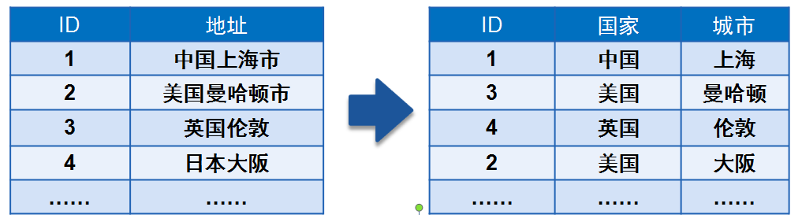
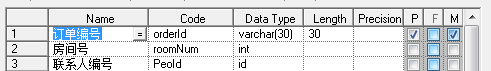

1. 数据库能够做什么
- 存储大量数据，方便检索和访问
- 保持数据信息的一致、完整
- 共享和安全
- 通过组合分析，产生新的有用信息
2. 数据库的基本概念
2.1 实体
只要是在客观世界存在的、可以被描述出来的都是实体
2.2 数据库(DB)
- 数据库就是数据的仓库，可以存放结构化的数据
2.3 数据库管理系统(DBMS)
是一种系统软件，提供操作数据库的环境，可以通过数据库管理系统对数据进行插入、修改、删除和查询等操作。
2.4 SQL
结构化查询语言 专门用来和数据库进行交流的语言,几乎所有的DBMS都支持SQL

2.5 SQL规范
- SQL语句不区分大小写，建议SQL关键字大写，表名和列表小写
- 命令用分号结尾
- 命令可以缩进和换行，一种类型的关键字放在一行
- 可以写单行和多行注释 , #和–是单行注释，/***/多行注释
3. 数据表
- 表是数据库中包含所有数据的数据库对象，也是其它对象的基础。
- 表定义是一个列的集合，数据在表中是按行和列的格式组织的，用来存放数据
- 行也称为记录用来存放一个个实体，列称为字段用来描述实体的某一个属性 学生管理系统2
4.MYSQL简介
4.1 MYSQL特点
- 开源免费
- 性能高
- 安装使用都简单
4.2 MYSQL安装
- mysql下载
- 安装MYSQL
4.3 MYSQL配置
C:\Program Files\MySQL\MySQL Server 5.5\my.ini
- port 端口号
- basedir 安装目录
- datadir 数据存放访目录
- character_set_server 字符集
- default-storage-engine 存储引擎
- sql-mode 语法模式
- max-connections 最大连接数
4.4 MYSQL启动和停止
1 | net start MySQL |
4.5 通过命令行连接MYSQL
1 | mysql -h 127.0.0.1 -P 3306 -uroot -p123456 |
4.6 切换数据库
1 | use test; |
4.7 显示有哪些表
1 | show tables; |
4.8 显示当前数据库
1 | select database(); |
4.9 查询表结构
1 | DESC user; |
5. 创建表


6. 数据完整性
- 为了实现数据完整性，需要检验数据库表中的每行和每列数据是否符合要求
- 在创建表的时候，应该保证以后的数据输入是正确的，错误的数据不允许输入
6.1 域完整性
不同的字段需要设置为各种合适的类型，比如年龄就是整数类型


6.2 默认值
默认值是指如果用户没有指定值的情况下会记录的此字段指定一个提供一个预先设定的值
可以把居住地默认值设置为北京
6.3 非空约束
我们可以指定某个字段不能不输入，必须提供一个非空的值
姓名字段不能为空
7.实体完整性
7.1 主键约束
- 表中一列或者几列组合的值能用来唯一标识表中的每一行，这样的列或者列组合称为表的主键，主键表的数据不同重复。
- 如果两列或者多列组合起来唯一标识表中的每一行，则该主键又称为”组合键”
主键的选择标准
- 最少性 尽量选择单个键作为主键
- 稳定性 ，由于主键是用来在两个表间建立联接的，所以不能经常更新，最好就不更新
7.2 外键
成绩表中的学生ID应该在学生表中是存在的 我们应该让成绩表中的ID只能引用学生表中的ID，它们的值应该是一一对应的，也就是说成绩表中的ID是成绩表中的外键，对应学生表的主键 ，这样就可以保证数据的引用完整性
7.3 唯一约束
唯一约束是指某个字段值是唯一的，在所有的记录中不能有重复的值.
学生的身份证号可以设置为唯一约束
7.4 标识列
- 当表中没有合适的列作为主键时可以考虑增加标识列，标识列是一个无实际业务含义的列，仅仅用来区分每条记录。
- 标识列的值是自动生成的，不能在该列上输入数据
7.5 外键约束
一个表的外键必须引用另一个表的主键,比如成绩表中的学生ID会引用学生表的主键，课程ID会引用成绩表的主键
- 主表没有记录，子表中不能添加相应的记录
- 修改和删除主表记录不能让子表记录孤立，必须相应修改和删除
8. 数据操作
8.1 创建学生表
1 | CREATE TABLE `student` ( |
8.2 增加身份证号字段
1 | ALTER TABLE `student` ADD COLUMN `idcard` varchar(15) NULL AFTER `city`; --增加身份证字段 |
8.3 添加约束
1 | -- 主键约束 |
8.4 准备数据

1 | CREATE TABLE `student` ( |
9. SQL
9.1 SQL是什么
Structured Query Language：结构化查询语言
9.2 为什么要用SQL
- 使用界面操作数据库不方便
- 我们需要通过应用程序去操作数据库
9.3 SQL组成
9.3.1 DDL（data definition language）是数据定义语言
主要的命令有CREATE、ALTER、DROP等，DDL主要是用在定义或改变表（TABLE）的结构，数据类型，表之间的链接和约束等初始化工作上，他们大多在建立表时使用
9.3.2 DML（data manipulation language）是数据操纵语言
它们是SELECT、UPDATE、INSERT、DELETE`，就象它的名字一样，这4条命令是用来对数据库里的数据进行操作的语言
9.3.3 DCL（DataControlLanguage）是数据库控制语言
是用来设置或更改数据库用户或角色权限的语句，包括（grant,revoke等）语句
9.4 SQL运算符
是一种符号，它是用来进行列间或者变量之间的比较和数学运算的
9.4.1 算术运算符
| 运算符 | 说明 |
|---|---|
| + | 加运算，求两个数或表达式相加的和，如1+1 |
| - | 减少减运算，求两个数或表达式相减的差，如4-1 |
| * | 乘运算，求两个数或表达式相乘的积，如2*2 |
| / | 除运算，求两个数或表达式相除的商，如6/4的值为1 |
| % | 取模运算，求两个数或表达式相除的余数，如：6%4的值为2 |
- 查询姓名全称
9.4.2 逻辑运算符
| 运算符 | 说明 |
|---|---|
| AND | 当且仅当两个布尔表达式都为true时，返回TRUE |
| OR | 当且仅当两个布尔表达式都为false，返回FALSE |
| NOT | 布尔表达式的值取反 |
9.4.3 比较运算符
| 运算符 | 说明 |
|---|---|
| = | 等于 |
| > | 大于 |
| < | 小于 |
| <> | 不等于 |
| >= | 大于等于 |
| <= | 小于等于 |
| != | 不等于 |
9.5 查询窗口

9.6 数据操作语言
9.6.1 插入数据行
9.6.1.1 语法
1 | INSERT [INTO] 表名 [(列名)] VALUES (值列表) |
9.6.1.2 插入记录
向学生表插入一条记录, 姓名张三,身份证号123456,年龄30,城市北京
1 | INSERT INTO [school].[student] |
9.6.1.3 注意事项
- 每次插入一行数据，不能只插入一部分数据，插入的数据是否有效将按照整行的完整性要求来检验
- 每个数据值的数据类型、精度、位数必须与要应的列名精确匹配
- 不能为标识符指定值
- 如果某字段设置为不能为空，则必须插入数据
- 插入数据时还要符合检查性约束的要求
- 有缺省值的列，可以使用DEFAULT关键字来代替插入实际的值
9.6.2 更新数据行
9.6.2.1 语法
1 | UPDATE 表名 SET 列名 = 更新值 [WHERE 更新条件] |
9.6.2.2 更新记录
更新ID等于7的学生年龄改为40，城市改为上海
1
2
3UPDATE [school].[student]
SET age = 40,city = '上海'
WHERE id=7
9.6.2.3 注意
- 多列时用逗号隔开，一定要加更新条件以免错误更新
- 多个联合条件使用 AND
id=7 and idcard='410787' - 判断某字段是否为空
email is null or email = ''
9.6.3 删除数据
9.6.3.1 语法
1 | DELETE [FROM] 表名 [WHERE <删除条件>] |
9.6.3.2 删除记录
删除ID=7的学生记录
1
DELETE FROM [school].[student] WHERE id=7
9.6.3.3 注意
- Delete语句是对整行进行操作，因此不需要提供列名
- 如果要删除主表数据，则要先删除子表记录
9.6.4 TRUNCATE 截断表
截断整个表中的数据
9.6.4.1 语法
1 | TRUNCATE TABLE 表名 |
9.6.4.2 截断学生表
1 | TRUNCATE TABLE student |
数据全部清空,但表结构、列、约束等不被改动 不能用于有外键约束引用的表 标识列重新开始编号 因为要删除的数据不会写入日志，数据也不能恢复，所以工作中请尽量不要使用此命令
9.7 数据查询
- 查询就是从客户端 发出查询请求数据库服务器，并从数据库返回查询结果的过程
- 每次执行查询只是从数据表中提取数据，并按表的方式呈现出来
- 查询产生的是虚拟表,并不会保存起来
9.7.1 查询
9.7.1.1 语法
1 | SELECT <列名> |
9.7.1.2 排序
查询北京的学生信息，并按ID正序排列
1
2
3
4SELECT id,name,idcard,age,city
FROM student
WHERE home= '北京'
ORDER BY id asc

9.7.1.3 别名
1 | SELECT id,name,idcard,age,city AS home |
9.7.1.4 查询空行
1 | SELECT id,name,age,city |
9.7.1.5 常量列
1 | SELECT id,name,age,city,'中国' as country |
9.7.1.6 限制返回的行数
1 | SELECT id,name,age,city,'中国' as country |
9.7.1.7 DISTINCT
查询同学们一共来自哪些不同的城市
1
2SELECT id,name,age,DISTINCT city,'中国' as country
FROM student
9.7.1.8 +
在MYSQL中+号只能用作于数字
1
2
3
4
5SELECT 1+1
SELECT 1+'1'
SELECT 1+'zfpx'
SELECT 1+null
SELECT CONCAT(last_name,first_name) FROM user;
9.7.1.7 练习
9.7.1.7.1 准备数据
1 | ALTER TABLE `student` |
  
1 | INSERT INTO `student`(id,name,gender,age,city,province,birthday,idcard,email) VALUES ('1', '郭靖', '1', '1', '济南', '山东省', '1982-09-03', 1, '1@qq.com'); |
9.7.1.7.2 查询山东省的同学全部信息
1 | select * from student where province = '山东'; |
9.7.1.7.3 查询山东省的男同学的全部信息
1 | select * from student where province = '山东' and gender=1; |
9.7.1.7.4 查询没有填写电子邮箱的同学的姓名和身份证号
1 | SELECT name,idcard FROM student WHERE email IS NULL |
9.7.1.8 排序
9.7.1.8.1 把学生的分数按升序排列
1 | select * from score order by grade asc; |
9.7.1.8.2 把学生的分数按降序排列
1 | select * from score order by grade desc; |
9.7.1.8.3 课程编号按升序，成绩按降序
1 | select * from score order by course_id asc, grade desc; |
9.8 函数
9.8.1 字符函数
| 函数名称 | 描述 |
|---|---|
| CONCAT | 字符串连接 |
| CONCAT_WS | 使用指定的分隔符进行字符连接 |
| FORMAT | 数字格式化 |
| LOWER | 转小写字母 |
| UPPER | 转大写字母 |
| LEFT | 返回字符串s开始的最左边n个字符 |
| RIGHT | 返回字符串s开始的最左边n个字符 |
9.8.1.1 LENGTH
1 | SELECT LENGTH('zfpx'); |
9.8.1.2 拼接字符串 [CONCAT]
1 | SELECT CONCAT(last_name,'_',first_name) FROM employees; |
9.8.1.3 拼接字符串 [UPPER]
1 | SELECT UPPER('zfpx') FROM employees; |
9.8.1.4 拼接字符串 [LOWER]
1 | SELECT LOWER('ZFPX') FROM employees; |
9.8.1.5 截取字符串 [SUBSTR]
1 | SELECT SUBSTR('zfpx',2);-- 截取从指定索引处开始的所有的字符 |
9.8.1.6 姓名的首字符大写，其它字符小写然后用_拼接
1 | SELECT CONCAT(UPPER(SUBSTR(last_name,1,1)),'_',LOWER(SUBSTR(last_name,2))); |
9.8.1.7 返回子串在原始字符串的起始索引
1 | SELECT INSTR('zfpx','f'); |
9.8.1.8 去掉左右空格[TRIM]
1 | SELECT TRIM(' zfpx '); |
9.8.1.9 用空格补齐[LPAD]
1 | SELECT LPAD('zfpx',10,'@'); |
9.8.1.10 替换
1 | SELECT REPLACE('zfpx','f','q') |
9.8.1.11 FORMAT
1 | SELECT FORMAT(100000,2); 100,000.00 |
9.8.1.12 LEFT RIGHT
1 | select left('abcde12345',5); //abcde |
9.8.2 数学函数
| 函数名称 | 描述 |
|---|---|
| CEIL | 向上取整 |
| FLOOR | 向下取整数 |
| DIV | 整数取 |
| MOD | 取余(取模) |
| POWER | 幂运算 |
| ROUND | 四舍五入 |
| TRUNCATE | 数字截取 |
9.8.2.1 四舍五入
1 | SELECT ROUND(2.5); |
9.8.2.2 向上取整
1 | SELECT CEIL(1.00); |
9.8.2.3 向下取整
1 | SELECT FLOOR(1.00); |
9.8.2.4 截断
1 | SELECT TRUNCATE(1.66,1); |
9.8.2.5 取余
1 | SELECT mod(10,3); |
9.8.3 日期函数
| 函数名称 | 描述 |
|---|---|
| NOW | 当前日期和时间 |
| CURDATE | 当前日期 |
| CURTIME | 当前时间 |
| DATE_ADD | 日期变化 |
| DATEDIFF | 计算日期差 |
| DATE_FORMAT | 日期格式化 |
9.8.3.1 返回日期时间
1 | SELECT NOW(): |
9.8.3.2 返回日期
1 | SELECT CURDATE(): |
9.8.3.3 返回日期
1 | SELECT CURTIME(): |
9.8.3.4 返回日期中指定的部分
年 月 日 小时 分钟 秒
1 | SELECT YEAR(NOW()); |
9.8.3.5 str_to_date
将日期格式的字符串转成指定格式的日期
1 | SELECT STR_TO_DATE('2018-09-09','%Y-%m-%d') |
| 序号 | 格式符 | 功能 |
|---|---|---|
| 1 | %Y | 4位的年份 |
| 2 | %y | 2位的年份 |
| 3 | %m | 月份(01,02) |
| 4 | %c | 月份(1,2) |
| 5 | %d | 日(01,02) |
| 6 | %H | 小时(24小时制) |
| 7 | %h | 小时(12小时制) |
| 8 | %i | 分钟(00,01) |
| 9 | %s | 秒(00,01) |
9.8.3.6
查询入职日期为1984-8-4的员工信息
1 | SELECT * FROM employees WHERE hiredate = STR_TO_DATE('12-30 1984','%m-%d %Y'); |
9.8.3.7 DATE_FORMAT
将日期转换成指定字符串
1 | SELECT DATE_FORMAT(NOW(),'%Y年%m月%d日') |
9.8.3.8 DATE_ADD
1 | SELECT DATE_ADD(NOW(),INTERVAL 365 DAY); |
9.8.3.9 DATEDIFF
1 | SELECT DATEDIFF('2019-1-1',NOW()); |
9.8.4 其它函数
1 | SELECT CONNECTION_ID(); |
9.8.5 流程控制函数
9.8.5.1 IF
1 | SELECT IF(1>0,'A','B'); |
9.8.5.2 CASE函数
1 | CASE 要判断的字段和表达式 |
9.9 自定义函数
- 自定义函数是对MySQL的扩展，使用方式和内置函数相同
- 函数必须要有参数和返回值
- 函数可以接收任意类型的值，也可以接收这些类型的参数
- 函数体由合法的SQL语句组成
- 函数体可以是简单的SELECT语句或INSERT语句，如果是复合结构要用BEGIN…END
- 函数体也可以包含声明，循环和流程控制
- 返回值只能有一个
9.9.1 语法
1 | CREATE FUNCTION func_name() RETURNS VARCHAR(64) |
9.9.2 znow
- 注意函数名一定要跟着小括号表示参数
1 | CREATE FUNCTION znow() RETURNS VARCHAR(30) |
9.9.3 zadd
1 | CREATE FUNCTION zadd(num1 INT,num2 INT) RETURNS INT |
9.9.4 addUser
1 | CREATE TABLE stu(id int PRIMARY KEY AUTO_INCREMENT,name VARCHAR(50)); |
9.10 模糊查询
就是查询的条件是模糊的，不是特别明确的
9.10.1 通配符
代替一个或多个真正的字符，与LIKE 关键字一起使用
_表示一个任意字符%表示任意长度的字符串
9.10.2 BETWEEN AND
查询某一列在指定的规范内的记录，包括两个边界
1 | select * from score where grade between 80 and 100 |
9.10.3 IN
查询某一列中的值在列出的内容列表中
1 | select * from student where city in ('北京','上海','广东') |
9.10.4 IS NUL
- 查询没有邮箱的 IS NUL
- 查询有邮箱的 IS NOT NULL
10. DCL
10.1 创建用户
1 | CREATE USER 用户名@访问地址 IDENTIFIED BY '密码' |
10.2 授予权限
1 | GRANT 权限1,权限2,,, ON 数据库.* TO 用户名 |
10.3 授予权限
1 | REVOKE 权限1，权限2，，，ON 数据库.* FROM 用户名; |
10.4 查看用户权限
1 | SHOW GRANTS FROM 用户名 |
10.5 删除用户
1 | DROP USER 用户名 |
10.6 修改密码
1 | UPDATE USER SET PASSWORD=PASSWORD('password') WHERE User='username' and Host='localhost'; |
11. 存储过程
- 大多数SQL语句都是针对一个或多个表的单条语句。但是并不是所有的操作都是可以用一条语句来完成的，经常有一些操作是需要多条语句配合才能完成。我们引入的存储过程（Stored Procedure）是一组为了完成特定功能的SQL语句集，经编译后存储在数据库中，用户通过指定存储过程的名字并给定参数（如果该存储过程带有参数）来调用执行它
11.1 语法
1 | CREATE PROCEDURE([[IN |OUT |INOUT ] 参数名 数据类形...]) |
11.2 调用
因为存储过程实际上是一种函数,所以存储过程名后需要有 () 符号(即使不传递参数也需要)
1
CALL Avg_Price()
11.3 删除
1 | DROP PROCEDURE IF EXISTS Avg_Price; |
11.4 参数
- 存储过程并不显示结果，而是把结果返回给你指定的变量
1 | create procedure sum (in a int,in b int,out result int) |
12. 索引
- 索引可以提高数据库的查询速度

12.1 准备数据
1 | -- 构建一个8388608条记录的数据 |
12.2 创建普通索引
1 | create table user(id int primary key,name varchar(32),email varchar(32)); |
12.3 查看索引
1 | show index from 表名; |
12.4 删除索引
1 | alter table 表名 drop primary; |
12.5 慢查询
1 | explain |

12.6 索引创建的原则
- 比较频繁作为查询条件的字段应该创建索引
- 唯一性太差的字段不适合单独创建索引，即使频繁作为查询条件
- 更新非常频繁的字段不适合作创建索引
- 不会出现在where子句中的字段不该创建索引
13. 什么是聚合函数
对一组值进行计算，并返回计算后的值，一般用来统计数据
1.1 SUM
累加所有行的值
1 | 计算ID=1的学生的的总分 |
1.2 AVG
计算所有行的平均值
1 | 计算ID=1的学生的的平均分 |
1.3 MAX、MIN
- 计算所有行的最大值和最小值
1 | select MAX(grade) 最高分,MIN(grade) 最低分 from score where student_id = 1; |
1.4 AVG
- 计算所有行的平均值
1 | select AVG(grade) as '平均分' 最低分 from score where student_id = 1; |
1.5 COUNT
- 计算值不为NULL的行
1 | select COUNT(*) from student; |
14. 分组
分组查询就是按某列的值进行分组，相同的值分成一组，然后可以对此组内进行求平均、求和等计算

2.1 语法
1 | SELECT 列名,查询表达式 |
SELECT列表中只能包含：
- 被分组的列
- 为每个分组返回一个值的表达式，如聚合函数
2.2 练习
统计每位同学的平均成绩-单列分组
1
select student_id,avg(grade) from score group by student_id;
统计每门课程的最高分，并按分数从高到低排列
1
select course_id,max(grade) 平均分 from score group by course_id order by max(grade) desc
统计各省的男女同学人数-多列分组
1
select province,gender,COUNT(*) from student group by province,gender
2.3 分组筛选
2.3.1 语法
1 | SELECT FROM <表名> |
- WHERE用于过滤掉不符合条件的记录
- HAVING 用于过滤分组后的记录
- GROUP BY用于对筛选后的结果进行分组
2.3.2 练习
统计学生人数超过1人的省份
1
select province,COUNT(*) from student group by province having COUNT(*)>1
不及格次数大于1次的学生
1
select student_id,COUNT(*) 不及格次数 from score where grade <60 group by student_id having COUNT(*)>1
15. 子查询
- 子查询就是指出现在其它SQL语句中的SELECT语句,必须始终出现在圆括号中
- 子查询可以包含多个关键字或条件
- 子查询的外层查询可以是: SELECT、INSERT、UPDATE、SET等
- 子查询可以返回常量、一行数据、一列数据或其它子查询
3.1 比较运算符的子查询
- = 等于
>大于- < 小于
>= 大于等于- <= 小于等于
- <> 不等于
- != 不等于
- <=> 安全不等于
3.2 查询年龄大于平均年龄的学生
1 | SELECT ROUND(AVG(age),2) FROM student; |
3.2 ANY SOME ALL
= < <= = <> !=
ANY 任何一个
SOME 某些
ALL 全部
1 | 年龄大于陕西省任何一位同学 |
3.3 查询一下有考试成绩的学生信息
- [IN]
- [NOT IN]
1 | SELECT * FROM student where id in (SELECT distinct student_id from score); |
[EXISTS]
[NOTEXISTS]
1
SELECT * FROM student where EXISTS (SELECT distinct student_id from score where student.id = score.student_id )
16. 表连接
4.1 连接类型
- INNER JOIN 内连接
- LEFT JOIN 左外连接
- RIGHT JOIN 右外连接
- ON 连接条件

4.2 连接条件
使用ON关键字来设定连接条件，也可以使用WHERE来代替
- ON来设定连接条件
- 也可以使用WHERE来对结果进行过滤
4.3 内连接
显示左表和右表中符合条件的
1 | SELECT * FROM student INNER JOIN score ON student.id = score.student_id; |
4.4 左外连接
显示左表的全部和右表符合条件的
1 | SELECT * FROM student LEFT JOIN score ON student.id = score.student_id; |
4.5 右外连接
显示右表的全部和左表符合条件的
1 | SELECT * FROM student RIGHT JOIN score ON student.id = score.student_id; |
4.6 多表连接
1 | SELECT student.name,course.name,score.grade FROM score |
4.7 无限分类[自身连接]
4.7.1 建表
1 | CREATE table category( |
4.7.2 插入语句
1 | INSERT INTO category(id,name,parent_id) |
4.7.3 查询所有的顶级分类下面分类的数量
1 | SELECT c1.id,c1.name,COUNT(1) |
4.7.4 父类变成名称
1 | SELECT c1.id,c1.name,p.name |
4.8 删除重复记录[多表删除]
1 | INSERT INTO category(id,name,parent_id) |
4.8.1 子查询找要删除的ID
1 | SELECT * FROM category c1 LEFT JOIN |
4.8.2 通过IN找要删除的ID
1 | SELECT * FROM category c1 |
4.8.3 删除重复记录
1 | DELETE FROM category |
4.9 多表更新
4.9.1 (插入省份)INSERT SELECT
1 | CREATE TABLE province(id int PRIMARY KEY AUTO_INCREMENT,name varchar(50)) |
4.9.2 更新省份
1 | UPDATE student INNER JOIN province ON student.province=province.name |
4.9.3 修改字段
1 | ALTER TABLE student |
17. 为什么需要设计数据库
1.1 良好的数据库设计
- 节省数据的存储空间
- 能够保证数据的完整性
- 方便进行数据库系统的开发
1.2 糟糕的数据库设计
- 数据冗余，存储空间浪费
- 内存空间浪费
- 数据和更新插入异常
18. 软件项目开发周期中的数据库设计
- 需求分析阶段: 分析客户的业务和数据处理需求
- 概要设计阶段： 设计数据库的E-R模型图，确认需求的正确和完整性
- 详细设计阶段： 应用三大范式审核数据库
- 代码编写阶段： 物理实现数据库，编码实现应用
- 软件测试阶段
- 安装部署
现实世界->信息世界->数据库模型图->数据库
19.设计数据库的步骤
3.1 收集信息
与相关人员进行交流、访谈充分了解用户需求，理解数据库需要完成的任务
3.2 标示实体(Entity)
标识数据库要管理的关键对象或者实体，实体一般是名词
3.3 标示实体的属性(Attribute)
3.4 标示实体之间的关系(RelationShip)
20. 数据库ER图
ER图：实体关系图，简记E-R图，是指以实体、关系、属性三个基本概念概括数据的基本结构，从而描述静态数据结构的概念模式

4.1 ER图的实体（entity）
- ER图的实体（entity）即数据模型中的数据对象，例如人、学生、音乐都可以作为一个数据对象，用长方体来表示
4.2 ER图的属性（attribute）
- ER图的属性（attribute）即数据对象所具有的属性，例如学生具有姓名、学号、年级等属性，用椭圆形表示
- 属性分为唯一属性（ unique attribute）和非唯一属性
- 唯一属性指的是唯一可用来标识该实体实例或者成员的属性，用下划线表示，一般来讲实体都至少有一个唯一属性。
4.3 ER图的关系（relationship）
- ER图的关系（relationship）用来表现数据对象与数据对象之间的联系
- 例如学生的实体和成绩表的实体之间有一定的联系，每个学生都有自己的成绩表，这就是一种关系，关系用菱形来表示。
4.4 ER图中关联关系
4.4.1 1对1 (1:1)
1对1关系是指对于实体集A与实体集B，A中的每一个实体至多与B中一个实体有关系；反之，在实体集B中的每个实体至多与实体集A中一个实体有关系。
4.4.2 1对多（1:N）
1对多关系是指实体集A与实体集B中至少有N(N>0)个实体有关系；并且实体集B中每一个实体至多与实体集A中一个实体有关系。

4.4.3 多对多（M:N）
多对多关系是指实体集A中的每一个实体与实体集B中至少有M(M>0)个实体有关系，并且实体集B中的每一个实体与实体集A中的至少N（N>0）个实体有关系。

21. 数据库设计三大范式
5.1 不合理的表设计
- 信息重复
- 更新异常
- 插入异常
- 删除异常
5.2 三大范式
5.2.1 第一范式（1NF）
- 数据表中的每一列（每个字段）必须是不可拆分的最小单元，也就是确保每一列的原子性；

5.2.2 第二范式（2NF）
- 满足1NF后，要求表中的所有列，都必须依赖于主键，而不能有任何一列与主键没有关系，也就是说一个表只描述一件事情


一个人同时订几个房间，就会出来一个订单号多条数据，这样子联系人都是重复的，就会造成数据冗余
5.2.3 第三范式（3NF）
- 必须先满足第二范式（2NF），要求：表中的每一列只与主键直接相关而不是间接相关，(表中的每一列只能依赖于主键)
- 数据不能存在传递关系,即每个属性都跟主键有直接关系而不是间接关系

5.2.4 如何更好的区分三大范式
- 第一范式和第二范式的区别在于有没有分出两张表,第二范式是说一张表中包含了所种不同的实体属性，那么要必须分成多张表
- 第三范式是要求已经分成了多张表，那么一张表中只能有另一张表中的id（主键），而不能有其他的任何信息（其他的信息一律用外键在另一表的主键看查询）。
22.RBAC
基于角色的权限访问控制（Role-Based Access Control）
RBAC（Role-Based Access Control，基于角色的访问控制），就是用户通过角色与权限进行关联
简单地说，一个用户拥有若干角色，每一个角色拥有若干权限。这样，就构造成“用户-角色-权限-资源”的授权模型
在这种模型中，用户与角色之间，角色与权限之间，权限与资源之间一般是多对多的关系。
在RBAC中最重要的概念包括：用户(User)，角色(Role)，权限(Permission)，资源(Resource)
5.1 安全原则
最小权限原则之所以被RBAC所支持，是因为RBAC可以将其角色配置成其完成任务所需要的最小的权限集
责任分离原则可以通过调用相互独立互斥的角色来共同完成敏感的任务而体现，比如要求一个计帐员和财务管理员共参与同一过帐。
数据抽象可以通过权限的抽象来体现，如财务操作用借款、存款等抽象权限，而不用操作系统提供的典型的读、写、执行权限
5.2 ER图

5.2.1 用户表
| 字段 | 字段名 | 类型 | 默认 |
|---|---|---|---|
| id | ID | int(11) | |
| username | 用户名 | varchar(255) | |
| password | 密码 | varchar(255) | |
| 邮箱 | varchar(255) | ||
| phone | 手机号 | varchar(255) | |
| gender | 性别 | tinyint | |
| birthday | 生日 | datetime | |
| addresss | 地址 | varchar(255) | |
| create_time | 创建时间 | datetime | CURRENT_TIMESTAMP |
| last_login | 上次登录时间 | datetime | |
| status | 状态 | tinyint | 1 |
5.2.2 角色表
| 字段 | 字段名 | 类型 | 默认 |
|---|---|---|---|
| id | ID | int(11) | |
| name | 名称 | varchar(255) | |
| create_time | 创建时间 | datetime | CURRENT_TIMESTAMP |
| status | 状态 | tinyint | 1 |
5.2.3 资源表
| 字段 | 字段名 | 类型 | 默认 | |
|---|---|---|---|---|
| id | ID | int(11) | ||
| name | 名称 | varchar(255) | ||
| key | 路径 | varchar(255) | ||
| create_time | 创建时间 | datetime | CURRENT_TIMESTAMP | |
| status | 状态 | tinyint | 1 |
5.2.4 用户角色表
| 字段 | 字段名 | 类型 |
|---|---|---|
| user_id | 用户ID | int(11) |
| role_id | 角色ID | int(11) |
5.2.5 角色资源
| 字段 | 字段名 | 类型 |
|---|---|---|
| role_id | 角色ID | int(11) |
| resource_id | 资源ID | int(11) |
5.3 数据库脚本
1 | ALTER TABLE `categories` DROP FOREIGN KEY `fk_category_parent_id`; |
23.事务
6.1 为什么需要事务
- 银行转账问题
- A账户资金减少
- B账户资金增加
1 | create database bank; |
6.2 什么是事务
- 事务是作为单个逻辑工作单元执行的一系列操作
- 多个操作作为一个整体向系统提交，要么都执行，要么都不执行
- 事务是一个不可分割的工作逻辑单元
转账过程就是一个整体，它需要两条UPDATE语句，如果任何一个出错，则整个转账业务取消，两个账户的余额都恢复到原来的数据，确保总余额不变
6.3 事务的特性
- 原子性(Atomicity) 事务是一个完整的操作，事务各个部分是不可分的，要么都执行，要么都不执行
- 一致性(Consistency) 当事务完成后，数据必须处理完整的状态
- 隔离性(Isolation) 并发事务彼此隔离、独立，它不应该以任何方式依赖于其它事务
- 持久性(Durability) 事务完成后，它对数据库的修改被永久保持
6.4 如何创建事务
- 开始事务
START TRANSACTION或者BEGIN - 提交事务
COMMIT - 回滚或者说撤销事务
ROLLBACK
1 | BEGIN; |
- 默认情况下，每条单独的SQL语句视为一个事务
- 关闭默认提交状态后，可手动开启、关闭事务
- 关闭/开启自动提交状态
SET autocommit=0|10关闭 1开启
关闭自动提交后，从下一条SQL语句开始开启新的事务，需要使用COMMIT或ROLLBACK结束该事务
24.在node中使用mysql
1 | npm install mysql |
7.1 使用mysql
1 | var mysql = require('mysql'); |
7.2 使用mysql连接池
1 | var mysql = require('mysql'); |
7.3 使用mysql事务
1 | connection.beginTransaction(function(err) { |
25.锁
- 锁时计算机协调多个进程或线程并发访问某一资源的机制
8.1 锁的分类
- 从对数据库操作的类型分，分为读锁和写锁
- 读锁（共享锁）：针对同一份数据，多个读操作可以同时进行而不会互相影响
- 写锁（排它锁）：当前写操作没有完成前，它会阻断其他写锁和读锁
- 从对数据操作的粒度分，分为
- 表锁
- 行锁
8.2 表锁
- 表锁偏向
MyISAM存储引擎，开销小，加锁快，锁定粒度大，发生锁冲突的概率最高，并发度最低
8.2.1 准备数据
1 | CREATE TABLE `users` ( |
8.2.2 加读锁
| 会话1 | 会话2 | 说明 |
|---|---|---|
| lock table users read; | 连接数据库 | |
| select * from users; | select * from users; | 都可以查询 |
| select * from role; | select * from role; | 会话1不能查询没有锁定的表，会话2可以查询没有锁定的表或更新未锁定的表 |
INSERT INTO users (id, NAME) VALUES (‘5’, ‘e’); |
INSERT INTO users (id, NAME) VALUES (‘5’, ‘e’); |
会话1插入或更新会提示错误，会话2插入或更新会提示等待 |
| unlock tables; | INSERT INTO users (id, NAME) VALUES (‘5’, ‘e’); |
会话1释放锁后，会话2完成插入操作 |
8.2.3 加写锁
| 会话1 | 会话2 | 说明 |
|---|---|---|
| lock table users write; | 连接数据库 | |
| select * from users; | select * from users; | 会话1可以对锁定表进行插入更新和删除操作,会话2的查询操作也会被阻塞 |
| unlock tables; | 会话1释放锁，会话2返回结果 |
读锁会阻塞写，但是不会阻塞读。而写锁则会把读和写都阻塞
8.3 行锁
- 行锁偏向InnoDB存储引擎，开销大，加锁慢，会出现死锁，锁定粒度最小，发生锁冲突的概率最低，并发度也最高
- InnoDB与MYISAM的最大不同有两点：一是支持事务（TRANSACTION）；二是采用了行级锁
8.3.1 行锁支持事务
8.3.1.1 并发事务处理带来的问题
8.3.1.1.1 更新丢失（Lost Update）
- 当两个或多个事务选择同一行，然后基于最初选定的值更新该行时，由于每个事务都不知道其他事务的存在，就会发生丢失更新问题–最后的更新覆盖了由其他事务所做的更新。
- 后面的事务覆盖了前面的值,这是正常现象
1 | create table account3 (id int,balance int) ENGINE=InnoDB; |
8.3.1.1.2 脏读（Dirty Reads）
- 一个事务正在对一条记录做修改，在这个事务完成并提交前，这条记录的数据就处于不一致的状态；这时，另一个事务也来读取同一条记录，如果不加控制，第二个事务读取了这些
脏数据，并据此作进一步的处理，就会产生未提交的数据依赖关系。这种现象被形象的叫做脏读。 - 一句话：事务A读取到了事务B已经修改但尚未提交的数据，还在这个数据基础上做了操作。此时，如果B事务回滚，A读取的数据无效，不符合一致性要求。
- 脏读是事务B里面修改了数据 ,这是不正常的
- 解决办法：如果在第一个事务提交前，任何其他事务不可读取其修改过的值，则可 以避免该问题。
修改日志的隔离级别
1 | -- 支持的存储引擎 |
8.3.1.1.3 不可重复读（Non-Repeatable Reads）
- 一个事务在读取某些数据后的某个时间，再次读取以前读过的数据，却发现其读出的数据已经发生了改变、或某些记录已经被删除了！这种现象就叫做”不可重复读”。
- 一句话：事务A读取到了事务B已经提交的修改数据，不符合隔离性,这是不正常的
- 解决办法：如果只有在修改事务完全提交之后才可以读取数据，则可以避免该问题
- 针对的是update或delete
修改日志级别
1 | SET SESSION TRANSACTION ISOLATION LEVEL read committed; |
会话2
1 | start TRANSACTION; |
会话2
1 | start TRANSACTION; |
8.3.1.1.4 幻读（Phantom Reads）
- 一个事务按相同的查询条件重新读取以前检索过的数据，却发现其他事务插入了满足其查询条件的新数据，这种现象就称为”幻读”。
- 一句话：事务A读取到了事务B提交的新增数据，不符合隔离性
- 幻读是事务B里面新增了数据,这是不正常的
- 解决办法：如果在操作事务完成数据处理之前，任何其他事务都不可以添加新数据，则可避免该问题
- 针对的是
insert - 要更新隐藏的行之后才能看到幻读现象
1 | SELECT @@tx_isolation; |
8.3.1.2 事务隔离五种级别
- read uncommitted : 读取尚未提交的数据 ：就是脏读
- read committed：读取已经提交的数据 ：可以解决脏读
- repeatable read：可重读读取：可以解决脏读和不可重复读 —mysql默认的
- serializable：串行化：可以解决 脏读、不可重复读和幻读—相当于锁表
- Innodb的默认事务隔离级别是重复读
repeatable read
1 | SELECT @@tx_isolation; |
| 隔离级别 | 脏读 | 非重复读 | 幻读 |
|---|---|---|---|
| read uncommitted | 允许 | 允许 | 允许 |
| read committed | 允许 | 允许 | |
| repeatable read | 允许 | ||
| serializable |
8.3.2 死锁
- 只有在INNODB引擎上的索引键上才会启用行级锁
- Deadlock found when trying to get lock; try restarting transaction
| 会话1 | 会话2 | 说明 |
|---|---|---|
| set autocommit=0 | set autocommit=0 | 都关闭默认提交 |
| update account set balance = balance -10 where name = ‘张三’ | update account2 set balance = balance -10 where name = ‘李四’ | |
| update account2 set balance = balance -10 where name = ‘李四’; | update account2 set balance = balance -10 where name = ‘张三’; |